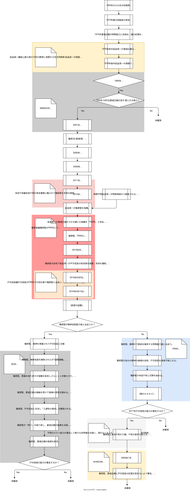

昭和、平成、令和
東京都
物理法則を超えた力が在る社会にて
表現の警告
- R-18：成人向けの性的な表現を含みます。18歳未満もしくは高校生の方は閲覧をご遠慮ください。また閲覧にはPixivアカウントが必要です。
- R-18G：性的な表現に加え、グロテスクな描写や倫理的に不安定な状況の描写を含みます。18歳未満もしくは高校生の方は閲覧をご遠慮ください。また閲覧にはPixivアカウントが必要です。
- †：作成者が読んだり書いたりした時、体調を崩した作品です。
世界
登場人物
- 延金 英一（1955年生まれ）
- 葛城 正親（1970年生まれ）
- 風間 竜也（不明）
- 指宿 楓（不明）
- 四方 椿（1992年生まれ）
- 篠原 堅（1994年生まれ）
- 戸次 信長（1995年生まれ）
- 鳥本 春樹（1996年生まれ）
- 四方 優也（1996年生まれ）
- 本田 千和（1998年生まれ）
- 横島 透 （不明）
時系列

- [漫画]Today's shopper
- [漫画]Da heart stopped beating
- [漫画]OPEN da DOOR
- [漫画]2016年5月5日8:30頃：ロッカー室にて
- [脚本]2016年5月5日 FANGの共有Gmailアカウントの下書きに保存されたテキスト
- [漫画]BIG DOG's Digging Life
- [漫画]DON'T ENTER da TERRITORY:1/3†
- [漫画]DON'T ENTER da TERRITORY:2/3†
- [漫画]DON'T ENTER da TERRITORY:3/3†
- [漫画]The line of DUTY†
- [漫画]Trapped Teleporter†
- [R-18G][漫画]Tiger's claw
- [漫画]Runnin'
- [脚本]篠原 堅に助けられた四方 椿
- [R-18G][脚本]誘いの言葉:結合の役割選択およびその意思表示について
- [R-18][脚本]赦しのことば
- [R-18][脚本]性具の痛覚
- [R-18][脚本]空洞の疼き
- [脚本]隠れたセカイ†
- [脚本]タチ不足
- [脚本]鳥本 春樹という振る舞い
設定資料
コンセプトアート
クロスオーバー
ライセンス
本サイトにリンクを掲載した作品はCreative Commons 表示—非営利（CC BY-NC）に基づき公開されています。
ただし以下の追加条件を適用します。
- 作品世界の設定、法則、歴史、特殊能力体系の改変は禁止
- 登場人物の行動、状態、関係性の解釈変更および二次創作は許可
- 本世界観内での新規登場人物の創作を許可（当該キャラクターの著作権は創作者に帰属）
- 商用利用は禁止